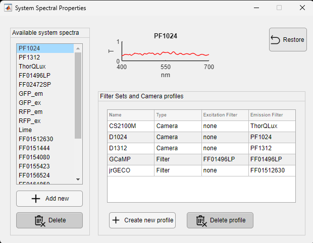
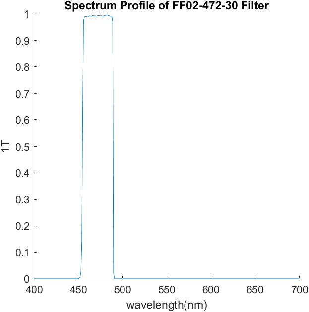

Some analysis functions (e.g., run_HemoCompute) in the toolbox need to use the optical parameters from the acquisition system, such as the spectral profiles of filters, illumination sources, and cameras. This information is stored in .mat files inside the folder .../Umit/IOIAnalysis/SystemOpticalParams and can be updated as needed.
The list of filter spectra as well as camera and filter set profiles can be modified using the GUI in DataViewer (Utilities >> System Optical Parameters):

Here is a description of the elements of the interface:
The left‐hand “Available System Spectra” list lets you view and manage every stored spectral curve.
The bottom‐center table defines imaging channels by pairing excitation and emission spectra.
| Name | Type | Excitation Filter | Emission Filter |
|---|---|---|---|
| CS2100M | Camera | none | ThorQLux |
| D1024 | Camera | none | PF1024 |
| GCaMP | Filter | FF01496LP | FF01496LP |
Click the Restore button (top-right) to revert all unsaved edits back to the last saved state.
Once you’ve finalized your edits, just close the GUI and the changes will be saved. All modifications are stored in the .mat configuration files—see the Details about the .mat files section for format and path.
Contains a list of all available spectral profiles from filters and cameras. The spectrum of each item consists of a vector with a length of 301 samples. The data is normalized from 0 to 1, and the wavelength ranges from 400 to 700 nm. Here is an example of the spectral profile of a band-pass filter at 472 nm (FF0247230):

This file contains a list of filter combinations (or sets) used. Each variable is a Matlab structure that contains the fields Excitation and Emission. The value of each field is the name of the spectral profile stored in the SysSpect.mat file.
This file contains a list of camera models and their corresponding spectral profiles in the SysSpect.mat file. The default cameras are the following: